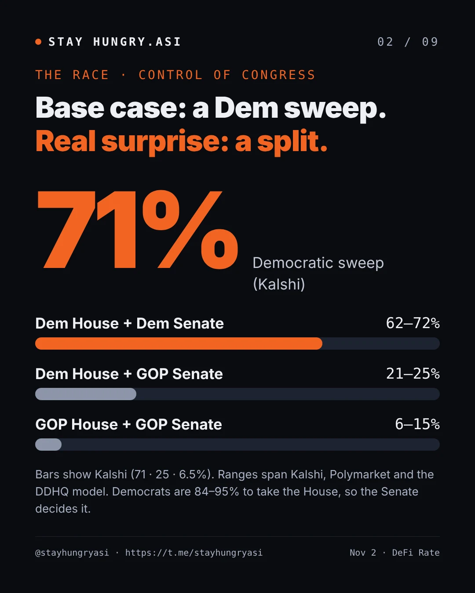
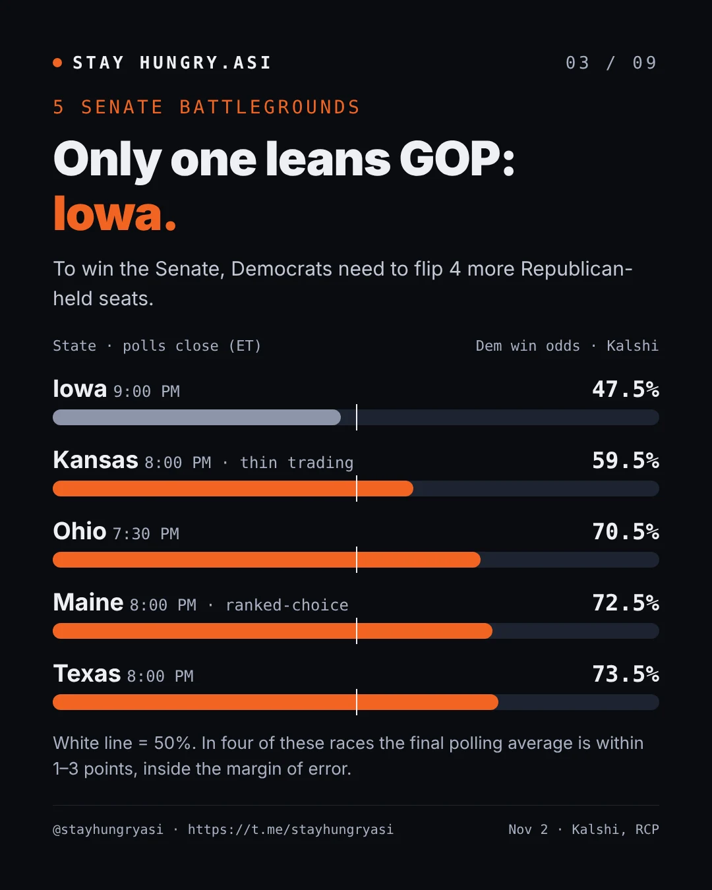
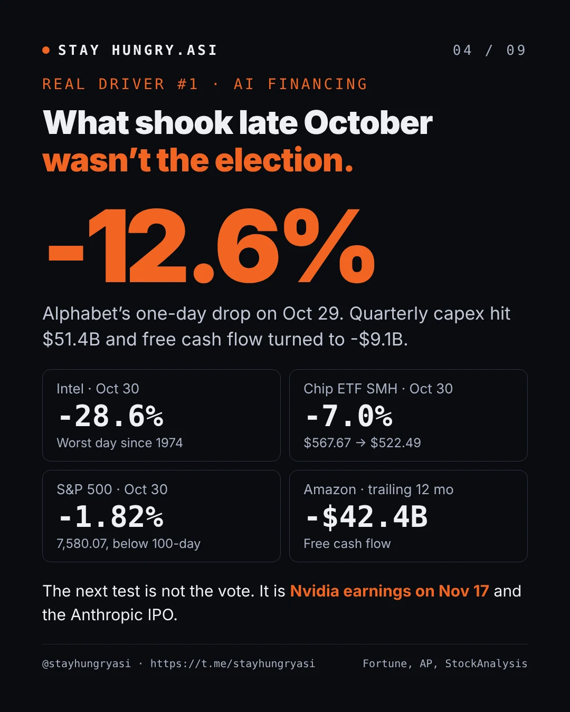
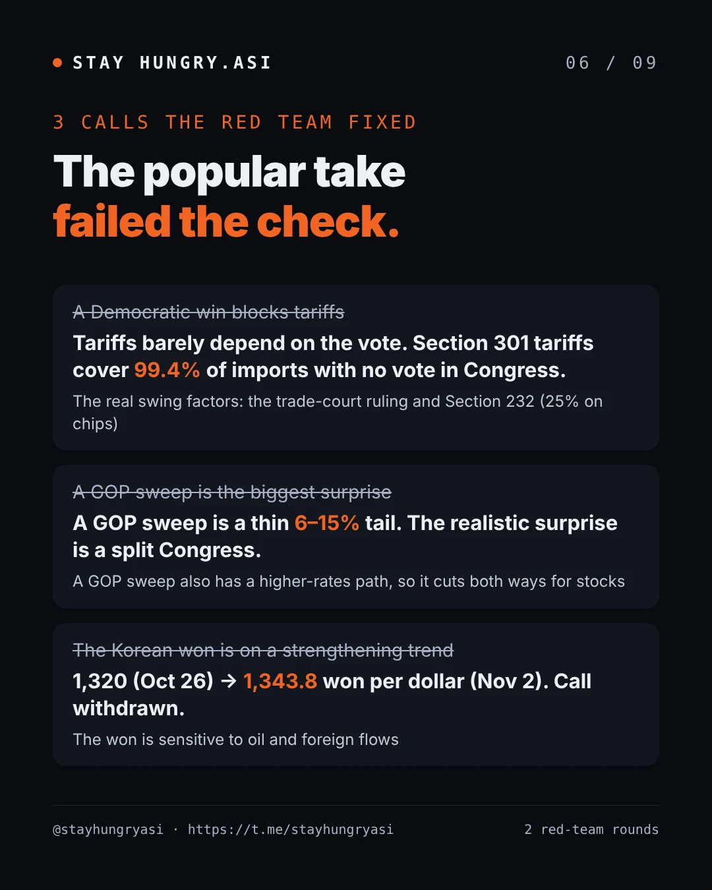
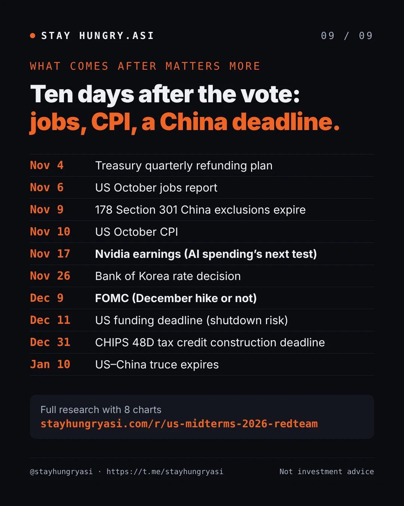

Data as of Nov 2, 2026, 16:30 (Korea time) · First verification Oct 29, 2026 · stayhungryasi.com
Notation: probabilities from prediction markets (Kalshi, Polymarket) and from models (DDHQ and others) are kept separate, each with its source and timestamp. Items marked 'estimate', 'secondary report' and 'author's judgment' are collected in the last section.
Conflict of interest: This research was written with Anthropic's AI (Claude), and the Anthropic IPO appears in the calendar in this report. This is not investment advice.
The key points in 9 cards. Click an image to enlarge it. Figures are as of Nov 2, 16:30 (Korea time).
The election sets sector rotation and the 'timing of macro shocks' more than the direction of the index. What moves the index now is concern over how AI investment gets financed, oil and the Fed.
The base case is a Democratic sweep. Prediction markets put it at 71~72% and DDHQ at 62%, so it is largely priced in. The realistic surprise is a split Congress (21~25%); a Republican sweep (6~15%) is a thin tail.
The AI financing shock is bigger than the election. Alphabet -12.6%, Intel -28.6% and the S&P's -1.82% on 10/30 came from concern over hyperscaler cash flow, unrelated to the election. Nvidia's 11/17 earnings and large AI IPOs are the next tests.
Macro and the election are linked through Iran. A strike after the election means oil → inflation → higher short-term rates; a deal to reopen Hormuz means Brent near $100. But in late October the equity selloff outweighed hawkish Fed talk, and the 10-year fell to 4.93%.
The key window for budget power is the lame-duck session (Nov~Dec). The outgoing Republican Congress handles the 12/11 deadline and a reconciliation bill to raise the debt limit. If Democrats win, they may push for a short-term extension to keep leverage for 2027 negotiations.
A Republican sweep cuts both ways too. It helps financials, energy and defense, but with the deficit at 6.2% of GDP, hopes for more tax cuts would raise the term premium and weigh on long-duration growth stocks. The reference line is a 5.2% 10-year.
Tariffs are largely unrelated to the election. Section 301 forced-labor tariffs cover 99.4% of imports with no congressional vote. The variables are a CIT ruling, which could come at any time, and Section 232.
States and localities set the pace of AI infrastructure. 36 governor races and 39 local ballot measures are held on the same day. A Democratic House would add headlines from an AI select committee.
Korea's memory volumes are strong, but valuations are tied to US Big Tech financing. The won weakened to KRW 1,343.8 and is sensitive to oil. Section 232 chip tariffs and the CHIPS 48D construction-start deadline (12/31) matter more directly than the election.
This document is material for judgment, not investment advice. The author is not an investment adviser.
What shook markets after Oct 29 was not the election but a financing shock to AI investment. Election odds tilted further toward Democrats. Two independent red teams rechecked every figure against the original sources as of 11/2 16:30 (Korea time). The charts and tables in the body below were also updated to these values.
| Item | 10/29 report | 11/2 latest | Verdict |
|---|---|---|---|
| Democratic sweep (Kalshi / Polymarket / DDHQ) | 63.5 / 66 / 55% | 71 / 72 / 62% | Consensus firmer |
| Republican sweep (Kalshi / Polymarket / DDHQ) | 8.8 / 7 / 19% | 6.5 / 6 / 15% | Tail thinner |
| Senate, Democrats (Kalshi / DDHQ) | 64.2 / 58% | 71.0 / 64% | Shift toward Democrats |
| S&P 500 | 7,743.98 (10/28) | 7,580.07 (10/30, -1.82%) | AI shock |
| Nasdaq Composite | 26,549.85 | 25,437.00 (10/30, -2.86%) | October -6.6% |
| Semiconductor ETF SMH | $567.67 | $522.49 (10/30, -7.0%) | Intel -28.6% |
| VIX | 16.91 | 19.42 (10/30) | Up |
| US 10-year | 5.04~5.05% | 4.93% | Down on equity selloff |
| Brent | $114~115 | about $110 (11/2, -3%) | Fell back on diplomatic signals |
| December hike odds | about 85% | about 72~76% | Down |
| KOSPI | 6,012.44 (10/28) | 5,859.08 (11/2) | Rebound after -3.48% on 10/30 |
| KRW/USD | 1,331.6 | 1,343.8 (11/2) | Strong-won call broken |
| Nvidia earnings | 11/18 (estimate) | 11/17 confirmed | Corrected |
| China rare-earth control suspension | expires 11/10 | Reported extension to 1/10; official document does not name rare earths | Uncertain |
Sources: DeFi Rate, DDHQ, AP via La Nación, StockAnalysis, Trading Economics, Political.org, Newspim, NVIDIA IR, Raw Materials
The AI financing shock pushed the election aside. Alphabet reported free cash flow of -$9.1 billion and quarterly capex of $51.4 billion, and fell -12.6% on 10/29 (Fortune). Amazon's trailing 12-month free cash flow is -$42.4 billion (SiliconANGLE), and S&P cut Meta's credit outlook to 'negative' (Investing.com).
The rate path moved the other way. Fed presidents Logan and Musalem talked about more hikes, but the equity selloff pulled the 10-year down to 4.93%. Seeing a 5% 10-year again would take a rebound in both oil and stocks.
Oil rose before the election. Even without a US strike, mines and attacks in Hormuz pushed Brent to $115~118, then reports that Trump would give diplomacy more time brought it down to about $110 on 11/2 (The National). The two ends: a post-election strike means a stagflation-style rise in short-term rates; a deal to reopen Hormuz means near $100.
The realistic surprise is not a Republican sweep (6~15%) but a split Congress (21~25%). The consensus is crowded. Trading is thin enough that Kansas jumped from 51% to 59.5% in a single day.
The timing of budget power has shifted. The 12/11 budget deadline will be handled by the outgoing Republican Congress. Republicans are weighing a lame-duck reconciliation bill with a debt-limit increase and defense spending, and the X-date is estimated at late 2027 to early 2028 (Roll Call).
Korea's memory volumes are strong, but valuations are tied to hyperscaler financing. October exports hit a record $115.3 billion (+93.7%), with semiconductors +259%. Even so, KOSPI fell -3.48% on 10/30, and the won weakened on oil and foreign selling (Korea Herald).
Move priced by options: S&P options expiring 11/4 imply about ±1.3% (Saxo), and the straddle through Wednesday is 1.51% (Goldman). Since 1990, the S&P's move on the day after a midterm has mostly been under 1% (Saxo).
VIX term structure: still normal (VIX9D 19.25 < VIX 19.42 < VIX3M 20.78). An inversion, with short-dated above longer-dated, would be a stress signal (TMAD).
Flows: BofA's CTA sell trigger (about 7,606) has already broken, and dealer gamma is within 1% of turning negative. On the other hand, about 80% of S&P companies exit their buyback blackout by this Friday (TheStreet Pro).
An early Democratic lead may shrink (inference). Early voting is a record 49.6 million ballots, and in the 27 states that report party registration it is Democrats 43%, Republicans 32% (Newsweek). In North Carolina, Georgia, Ohio and Texas, which count early votes first, an early Democratic lead may narrow as Election Day votes come in. California and Alaska are the reverse. Sharp moves in Kalshi or futures during Korean trading hours should not be over-read.
Delayed results: Maine uses ranked-choice voting (Collins vs Troy Jackson + 6 write-in candidates) and has taken about a week in the past (FairVote). Alaska allows 15 days for overseas absentee ballots, and Georgia holds a 12/1 runoff if no one gets a majority. In 2022 the Senate was decided on the Saturday after the election (PBS).
Litigation tail: The Justice Department's Alaska lawsuit was dismissed for lack of standing on 11/1 (Alaska's News Source), and a request to halt the LA County count was rejected both at trial court and at the Ninth Circuit.
Two independent red teams (numbers fact-check, logic attack) overturned or downgraded 4 theses of the previous analysis and corrected 4 figures. Both teams verified against original web sources without seeing the previous analysis.
| Type | Previous statement | Verdict | Correction |
|---|---|---|---|
| Thesis | Democrats winning even one chamber blocks across-the-board tariffs | Wrong | Section 301 forced-labor tariffs cover about 99% of imports without Congress. Tariffs are largely unrelated to the election |
| Thesis | A Republican sweep is the biggest underrated surprise | Downgraded | The Silver Bulletin model actually leans more Democratic than the market. There is also research finding that political prediction markets tend to underprice the favorite (arXiv) |
| Thesis | Republican sweep = one-sided positive | Refined | With the deficit and a 5% 10-year, there is a path to a higher term premium, so it cuts both ways for the index |
| Thesis | Democratic sweep path = hearings and headlines | Refined | The key is budget and debt-limit power. In the 2011 debt-limit standoff under a split Congress, the S&P fell about -19% (Kiplinger) |
| Thesis | Macro is a variable separate from the election | Refined | The election sets the timing of an Iran strike, which links it to oil (Al Jazeera) |
| Thesis | Won weakness is due to oil | Refined | The trend is won strength (KRW 1,320 on 10/26, strongest since Oct 2024). The 10/28 jump was a one-day pullback as pre-FOMC dollar strength and oil after Israel's election overlapped |
| Figure | S&P 7,722 = early trading 10/28 | Wrong | 10/27 close. The 10/28 close was 7,743.98 (Motley Fool) |
| Figure | KOSPI 10/7 6,995 | Wrong | 10/7 close was 6,803.90. 6,995.39 was the 9/7 close (Seoul Economic Daily) |
| Figure | 10-year peak = highest since April 2002 | Wrong | Highest since May 2002, peak 5.31~5.33% |
| Figure | BofA "-10% on a Democratic sweep" (October) | Weak source | Hartnett's mid-August weekly note, confirmed only through secondary reports. A tail scenario with conditions such as the Texas governor race (PrimeXBT) |
| Figure | Nvidia earnings 11/18 | Unconfirmed | Not announced by the company; an estimate |
| Figure | +17% in the 12 months after midterms (Goldman) | Outdated source | A statistic from a 2022 note. Replaced with the latest BofA statistic (historical precedents section) |
The House is effectively settled at 84~95% for Democrats, and the Senate has tilted further toward Democrats. Since 10/29 every source has moved 5~7%p toward Democrats. The gap between models is also wide. Silver Bulletin leans more Democratic than the market; the Economist and DDHQ are more conservative than the market.
| Source | House, Democrats | Senate, Democrats | As of |
|---|---|---|---|
| Kalshi (prediction market) | 93.65% | 71.0% | 11/2 |
| Polymarket (prediction market) | 94.5% | 72.5% | 11/2 |
| DDHQ (model) | 84% (241 seats) | 64% (52 seats) | 11/2 |
| Silver Bulletin (model) | 95.1% | 77.7% | 10/29 (latest paywalled) |
| VoteHub (model) | 89% | 63% | 10/30 |
| Economist (model) | — | 57.6% | 10/25 |
A Republican sweep fell to 6~15%. In prediction markets, a split Congress (24~25%) is the realistic direction for a surprise.
Democrats need a net gain of 4 Republican-held seats for a Senate majority (Covers). Iowa is the only battleground where both the market (47.5%) and DDHQ (Republican 53%) see Republicans favored. The widest market-model gap is in Ohio (15.5%p). Trading is thin enough that the Kansas Kalshi price jumped 8.5%p in a single day.
Final polling averages (RCP, 10/28~30): Iowa Hinson (R) +0.5, Ohio Brown (D) +2.6, Texas Talarico (D) +2.1, Maine Jackson (D) +1.4. All four are within the margin of error (270toWin, Marist).
The index has slipped from its October record, and this time the pressure is concern over AI investment financing, not rates. On 10/30 the S&P closed below its 100-day moving average for the first time since April (TheStreet). Meanwhile Q3 GDP came in at 3.4%, above expectations (3.1%), and September PCE was 3.6% (core 3.1%), so inflation remains high (Trading Economics).
| Indicator | Level | As of |
|---|---|---|
| S&P 500 | 7,580.07 (week -0.6%; record close 7,818.93 on 10/6) | 10/30 close |
| Nasdaq Composite | 25,437.00 (-7.8% from the Oct 6 high) | 10/30 close |
| Semiconductor ETF SMH | $522.49 (-7.0% on the day) | 10/30 close |
| VIX | 19.42 (VIX9D 19.25, VIX3M 20.78) | 10/30 close |
| US 10-year | 4.93% (October -36bp; early-October peak 5.31~5.33%) | 10/30~11/2 |
| Brent | about $110 (10/23 close $116.72; weekly gain given back) | 11/2 |
| WTI | about $100.6~101.0 | 11/2 |
| Fed funds rate | 3.75~4.00% (held 10-2 on 10/28) | — |
| December hike odds | about 72~76% (FOMC 12/8~9) | 10/30 |
| KRW/USD | 1,343.8 | 11/2 |
| KOSPI | 5,859.08 | 11/2 |
Sources: AP via La Nación (10/30 close), StockAnalysis, TMAD, Political.org, Trading Economics, Newspim (11/2) / 10/28 data: Fool, Cappnotes, Yahoo Finance, Trading Economics, Newsis, SBS
The election → oil path works within 2~3 weeks after the election; the budget path works at 12/11 and at the mid-2027 debt limit ($41.1 trillion, X-date estimated at late winter 2027 to Feb 2028) (NTU).
A Republican sweep (C) would be the biggest surprise, but its direction for the index depends on how the bond market reacts. The clear asymmetry is in sectors, not the index.
A (base): One analysis finds that historically a Democratic sweep has been the best outcome for broad equities, with financials and health care lagging (Saxo). BofA Hartnett's '-10%' warning is a conditional tail scenario.
C (tail): There are cases where stocks weakened on rising rates after a Republican sweep (Saxo). With the deficit at 6.2% of GDP, hopes for a ‘Reconciliation 2.0’ could lead to selling in long bonds.
Filibuster: Trump is pushing to end it, and the CLARITY Act was blocked even by 4 Republican defections (The Defiant, Election Law Blog). Even with a Republican sweep, limits on legislation remain.
Fed independence: The Supreme Court ruled that Governor Cook cannot be removed without due process (6/29), and while it overturned precedent on independent agencies, it carved out the Fed (Axios, DLA Piper). The institutional risk that the Senate's makeup poses to Fed independence is smaller than feared.
What the election changes is not demand in innovation sectors but speed (permits, regulation, cost of capital). Under a Democratic sweep (A), the regulatory channel and the rate channel move in opposite directions, so even within tech, high-beta infrastructure and cash-rich megacaps can diverge.
| Sector | What the election changes | Key level | Differences within |
|---|---|---|---|
| AI semiconductors | Speed and export controls on China. Demand (AI infrastructure investment of $1 trillion+ next year) is unaffected (Reuters) | Federal | High-beta chip stocks have the most election beta. SMH is about +57~58% year to date (estimate) |
| AI infrastructure | Permit speed and power-cost burden | State and local | Existing operators gain pricing power; new builds and utilities lose |
| Space | Contract allocation and oversight. Musk political spending about $366 million; SpaceX federal awards this year $6.78 billion (Digital Today) | Federal (appropriations) | With a Democratic House, risk of probes into SpaceX (SPCX) and Tesla contracts. SPCX lockup expiry estimated for early December |
| Crypto | Who writes the regulatory framework. Odds of the CLARITY Act passing this year 6.5% (The Defiant) | Federal | Exchange and infrastructure stocks are sensitive to legislation; bitcoin is sensitive to rates |
| Biotech · pharma | Drug prices and ACA subsidies (MarketBeat) | Federal | Big pharma faces drug-price risk; biotech benefits from lower rates |
| Defense | Pace of increases and Iran operations funding. FY27 NDAA passed the House, pending in the Senate | Federal | Autonomous and AI defense has bipartisan demand |
Correction: across-the-board tariffs are already back, without Congress. After IEEPA was struck down (2/20) and Section 122 expired (7/24), the administration imposed Section 301 'forced-labor' tariffs of 10~12.5% on Jul 23~24 (rate bands cover 60 countries; 86 countries are covered according to the litigation filings). They cover 99.4% of imports, with no congressional vote (Cleary Gottlieb, CRS). Korea is at 12.5%, within the 15% cap in the Korea-US deal (Asia Economy). The check is the courts, not Congress: 25 states sued at the Court of International Trade (CIT) on Aug 3. There is still no ruling after the 9/30 hearing, and there are reports that the panel was broadly skeptical of USTR (headline only confirmed, ExFreight). The ruling is a binary event that could come at any time, regardless of the election (Manufacturing Dive).
| Tariff tool | Current status | Change by election outcome |
|---|---|---|
| Section 301 forced labor (10~12.5%, 99.4% of imports) | In effect; CIT case pending | Almost none. Even a Democratic Congress cannot repeal it because of the veto |
| Section 232 semiconductors (25%, since Jan 2026) | In effect; threat of up to 100% (Korea Times) | None. Administration's discretion |
| IEEPA (unconstitutional) | Of about $166 billion collected, about $100 billion refunded by August (Withers) | None |
| 178 Section 301 China exclusions | Expire 11/9 23:59 ET; no extension notice (Thomson Reuters) | None |
Conclusion: Tariff risk is about the same whichever party wins. The variables are the CIT ruling and Section 232 decisions.
Korean semiconductors: Directly exposed to the 25% Section 232 tariff. There is a 'most-favored treatment' clause, but no production-linked exemption.
US-China deadlines run separately: The truce was extended to Jan 10, but the port-fee suspension (USTR proposed extending it to 1/9, comments due 10/30, Holland & Knight), the suspension of China's rare-earth controls (reported extension to 1/10 along with the truce; China's Commerce Ministry statement does not name rare earths) and the easing on gallium, germanium and antimony (11/27, Thomson Reuters) have separate deadlines.
Fiscal context: The FY26 deficit was $1.99 trillion (6.2% of GDP), and interest costs hit a record $1.36 trillion. Net tariff revenue fell 11% to $173 billion (BNN Bloomberg).
The votes that set the pace of data centers are not in Congress but in the governor, utility commission and local ballot races held the same day. Analysts see low odds that even a Democratic sweep would pass a federal law that significantly blocks data center construction, but expect more hearings and investigations (Reuters via Kitco).
| Level | Decided on 11/3 | Market channel |
|---|---|---|
| Congress | Investigation and subpoena power. House Democratic Leader Jeffries is considering an AI select committee with subpoena power (AI Weekly). Federal preemption of state AI laws has already stalled (CASRAI) | Headlines and compliance costs for model developers and hyperscalers |
| 36 governor races | Most candidates back expansion with conditions on regulation and local control; fewer than 10 back it unconditionally (MultiState) | 2027 permits and tax incentives |
| Utility commissions | Who pays for data center power | Utilities' ability to pass through rates |
| Local ballot measures | 39 in 8 states, 21 of them in Ohio. The 4 already decided all went toward tighter rules (Newsweek) | Delays to individual projects |
The backlash is bipartisan: In a September poll, 61% opposed data center construction and 34% supported it, and 47% of Republican supporters were also opposed (Arabian Post).
Already under way: New York signed the first statewide construction moratorium in the US, and the administration is urging Republican governors to adopt a pledge that data centers pay their own power and water costs (The Week).
Leading indicator: In Georgia's 2025 Public Service Commission election, 2 candidates who criticized preferential rates for Big Tech beat the incumbents (inkl).
Second-order effects: If new supply is blocked, existing data center operators gain pricing power, while new developers and rate-regulated utilities lose out (Seeking Alpha).
Korea's memory volumes are the strongest ever, but stocks are being shaken by concern over US hyperscaler financing, not by the election. The 10/28 rebound was driven by SK hynix's Q3 operating profit of KRW 83.3 trillion and KRW 60 trillion in shareholder returns (IBTimes), and on 10/30 the Alphabet and Intel shock sent SK hynix -8.45% and Samsung Electronics -5.93%. Samsung Electronics' Q3 (reported 10/29) DS division operating profit was KRW 106.5 trillion, slightly below the KRW 108.5 trillion consensus (Samsung Electronics, Financial News). KOSPI is about 36% below its record close of 9,114.55 on 6/22.
| Variable | Current status | Link to the election |
|---|---|---|
| October exports | Record $115.3 billion (+93.7%), semiconductors +259% (Korea Herald) | None. Memory demand is strong |
| US hyperscaler financing | Negative free cash flow at Alphabet and Amazon; Meta credit outlook cut | Indirect. The biggest variable for KOSPI valuations now |
| CHIPS 48D tax credit (35%) | Construction-start deadline 12/31. Directly tied to Samsung's Taylor and SK hynix's Indiana sites (Holland & Knight) | Direct: whether the lame-duck session extends it |
| Section 232 chip tariffs | 25%, threat of up to 100% (Korea Times) | Almost none (administration's discretion) |
| Korea-US $350 billion investment (shipbuilding $150 billion) | Korean special act passed 3/12; no US congressional vote needed (KEIA) | Weak |
| US-China deadlines | 11/9 23:59 ET (178 Section 301 exclusions), 11/27 (gallium etc.), 1/10 (truce; rare earths reportedly included) | Indirect |
| Bank of Korea rate meeting | 11/26, hike expected (held at 3.00% on 10/22) (Trading Economics) | Indirect |
| KRW/USD | KRW 1,320 on 10/26 (strongest since Oct 2024) → KRW 1,343.8 on 11/2 (Newspim) | A: tends toward a weaker dollar, but oil and foreign flows matter more |
The call for a strong-won trend is withdrawn. The won weakened from KRW 1,320 on 10/26 to KRW 1,343.8 on 11/2. On 11/2 foreigners were net sellers of KRW 368 billion and institutions net buyers of KRW 1.23 trillion. The won is better seen as a variable sensitive to oil and foreign flows.
Baseline volatility on count day is high: The last 5 trading days saw +6.6%, -1.2%, -3.5% and +2.2%. The US count takes place during Korean trading hours (after 09:00 on 11/4).
Korean signal on count day: If KRW/USD breaks 1,350 while Nasdaq and chip futures fall -2% or more, it means the AI financing shock, more than the election, is still moving KOSPI.
The Treasury refunding plan (11/4), jobs (11/6), CPI and US-China deadlines (11/9~10) are packed into the ten days after the election. As in 2010 (QE2) and 2022 (CPI), macro events right after the election are likely to overshadow the result.
Sources: jobs and CPI (BLS), refunding (Treasury), FOMC (Fattail), lame duck and budget (Roll Call, Harvard OFR), earnings (Amazon, MacDailyNews, NVIDIA IR), Anthropic S-1 (SEC EDGAR), SPCX (Wikipedia, lockup calculated as listing date + 180 days), US-China (Thomson Reuters, Raw Materials).
From 9 a.m. to 3 p.m. on Wednesday, Nov 4, almost all of the US count takes place during Korean trading hours. Daylight saving time ended on 11/1, so Korea time = US Eastern + 14 hours (The Green Papers). Options price an S&P move of ±1.3~1.5% on 11/4. Early on, early votes are counted first, which can exaggerate a Democratic lead (see the D-1 section).
| Korea time | US schedule (Eastern) | What to watch (11/2 Kalshi Democratic %) | How to read it |
|---|---|---|---|
| 11/3 06:30 | Apple earnings (after the 11/2 close) | Big Tech sentiment | Whether AI financing concerns continue |
| 11/4 09:00 | 7 p.m.: Georgia, South Carolina | South Carolina Senate (30.5%) | If Democrats are close, a 'wave' signal |
| 09:30 | 7:30 p.m.: Ohio, North Carolina | Ohio Senate (70.5%, model 55%) | An early Democratic lead may shrink with Election Day votes |
| 10:00 | 8 p.m.: Maine, Pennsylvania, most of Texas, Michigan, Kansas | Texas (73.5%), Maine (72.5%), Kansas (59.5%, thin liquidity) | If Republicans hold 2 of Ohio, North Carolina, Texas and Maine, the Senate goes to a toss-up |
| 11:00 | 9 p.m.: Iowa, Nebraska, Arizona | Iowa Senate (47.5%, the only battleground favoring Republicans) | A Democratic win all but confirms a Democratic sweep |
| 12:00~13:00 | Nevada, California | House seat count trend | California shifts toward Democrats as late-arriving mail ballots come in |
| 14:00~15:00 | Midnight: Alaska | Alaska Senate (71.5%) | 15 days for overseas absentee ballots and ranked-choice tabulation delay the result |
| 15:30 | Korean market close | Whether anyone wins a majority in Maine's first round; talk of challenges or lawsuits | About 1 week if ranked-choice tabulation is needed |
| 22:30 | 11/4 8:30 a.m. | Treasury quarterly refunding | Check reports of reduced long-bond supply |
| 23:30 | US market open | S&P futures beyond ±1.5%, VIX9D > VIX inversion, 10-year back at 5.0%, Brent | Any one of these means the market mispriced the result |
| 11/6 22:30 | October jobs (consensus +65,000, unemployment 4.2%) | Jobs and wages | December hike odds reset |
| 11/10 22:30 | October CPI | Core inflation | As in 2022, it could be a bigger day than the election |
| 11/18 07:00 | 11/17 5 p.m. | Nvidia earnings (confirmed) | The next test for the AI investment cycle |
Sources: DeFi Rate, Saxo, BLS, Treasury, NVIDIA IR, TheStreet Pro
The day before the count (11/3): check Apple earnings and Kalshi Senate prices
During trading on 11/4: watch KRW/USD and KOSPI 200 futures together
11/9~10: check for extension notices on US-China deadlines (301 exclusions, rare earths)
One-year returns after midterms have historically been strong, but in the week after the election, macro events that followed moved markets more than the result. The closest precedent is 2018, when a new Fed chair was raising rates.
| Year | Day or week after the election | Actual driver |
|---|---|---|
| 2022 | 11/9 -2.08%, 11/10 +5.5% on CPI | The market priced a red wave that did not come. CPI overshadowed the result |
| 2018 | 11/7 +2.1% | New chair raising rates. About -20% to the 12/24 low during Q4 |
| 2014 | Could not be confirmed | No notable driver |
| 2010 | Week of 11/5 +3.6% | QE2 announced 11/3. -19% in the 2011 debt-limit standoff |
| 2006 | 11/8 Dow record high | Oil, rates, housing. On to the 2007 peak |
Sources: Motley Fool, Fortune, Yahoo 2022, First Trust, Kiplinger
BofA (10/6): Since World War II, the 6-month and 12-month periods after midterms have never been negative, averaging about +13% and +14% (InvestingLive).
LSEG: Since 1986, 52-week returns were positive all 10 times, averaging +13.2% (Kaohoon).
Goldman: Since 1974, the median from 8/1 to Election Day in midterm years is 0%, and +6% in the following 3 months (Hellenic Shipping News).
Caution: Seasonality is a weak prior. With the S&P near its record high, there is less room for a ‘post-election relief rally’ than the historical average.
The items below are estimates, secondary reports or the author's judgment, not confirmed facts. All other figures were checked against the original sources linked in each section (cross-checked by two independent red teams).
| Item | Status (11/2) | Reason |
|---|---|---|
| Nvidia earnings date | Resolved: 11/17 confirmed | Company announcement on 10/28 |
| Treasury quarterly refunding | Resolved: 11/4 confirmed | Treasury statement of 8/5. Date of the 11/2 borrowing-estimate release not confirmed |
| Anthropic IPO | Public S-1 filing (10/26) confirmed in the SEC original | Offering size and valuation confirmed only through WSJ and Bloomberg reports (SEC EDGAR) |
| Deadline of China's rare-earth control suspension | Uncertain | 11/10 vs 1/10. China's Commerce Ministry statement does not name rare earths |
| SPCX lockup expiry 12/9 | Estimate | Calculated as listing date (6/12) + 180 days |
| BofA Hartnett '-10%' | Secondary report | Original note not accessible |
| Latest Silver Bulletin figures | 10/29 figures used | Paywalled after 10/30. Silver himself said "Senate 79" |
| December hike odds 72~76% | Secondary citation | Direct access to CME FedWatch failed; no 11/2 figure |
| Brent 10/30 settlement | Unconfirmed | Confirmed only as "above $113" |
| Kansas Kalshi 59.5% | Low reliability | Moved 8.5%p in a single day; thin trading |
| CIT Section 301 case 'skeptical' | Headline only | MLex article not accessible |
| Early Democratic lead due to count order | Inference | Estimated from the early-vote share and each state's count order |
| Sector heatmap directions | Author's judgment | Based on body sources; not a quantitative model |
| State recount thresholds | Unconfirmed | Varies by state; check each state election authority's notices on count day |
This document is material for judgment, not a recommendation to buy or sell. The author is not an investment adviser.
Political content covers only how each party's policy path affects markets; it does not judge which outcome is preferable.
Credit: stayhungryasi.com